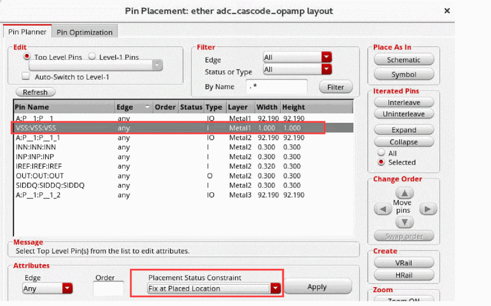

Placing a Pin in a Fixed Position not on the Boundary
To place a pin in a fixed location not aligned with the boundary:
- From the layout window menu bar, choose Edit – Move.
- In the layout window, select an unplaced pin and move it to the required location.
-
From the layout window menu bar, choose Floorplan – Pin Planner.
The Pin Placement form is displayed. - Select the pin in the pin table.
-
Choose Fix at Placed Location from the Placement Status Constraint drop-down list.
 - Click Apply. The pin is fixed at its current location and is not aligned with any edge.
You can optionally assign the pin to an edge immediately prior to step 5. If you do this, the pin is fixed at the location but the pin width and design rules are projected to the specified edge. This projection leaves open a channel on the aligned edge for the fixed pin to facilitate better routing from outside the boundary.
Related Topics
Planning Placement of Top-Level and Level-1 Pins
Return to top